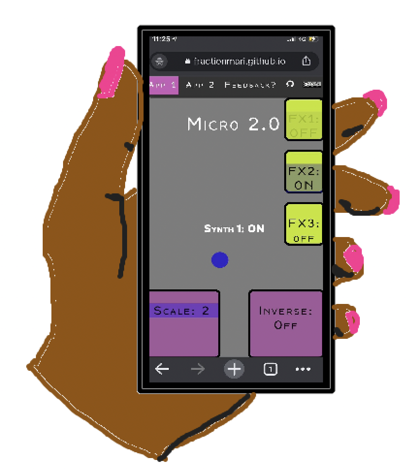

The Micro Apps

Web-apps (must be opened from a smartphone):
Micro v. 2.1 web-app
Micro v. 2.0 web-app
Micro v. 1.0 web-app
Github Repos:
Micro v. 2.1 repo
Micro v. 2.0 repo
Micro v. 1.0 repo
Other:
Micro v. 1.0 wiki
UiO project page for v. 1.0